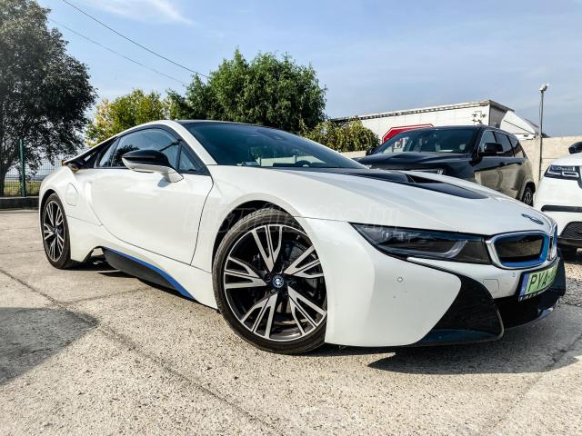
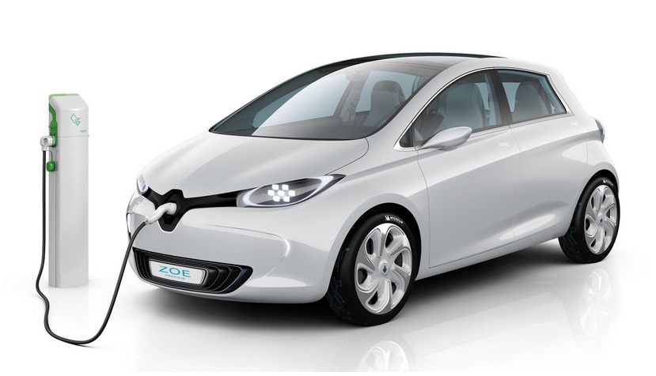
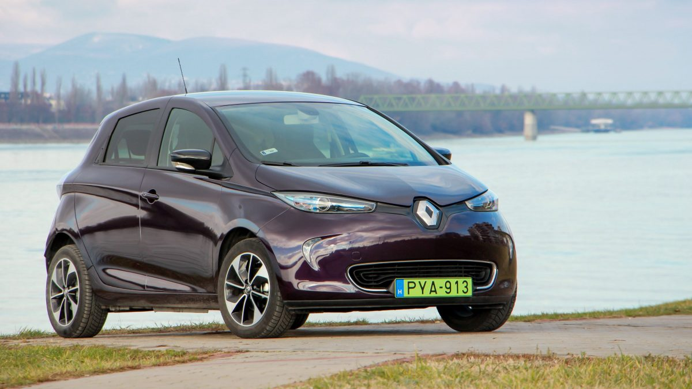

Elektomos Autó




Elektromos autó
Az elektromos autó kifejezéshez szinte mindenki más-más képzetet társít, ami részben érthető, hiszen az elektromos meghajtás sokféle formában került már bele a közlekedési eszközök különböző fajtáiba. Éppen emiatt a sokszínűség miatt nem is szükséges, hogy az elektromos autó kategóriáról mindenkinek ugyanaz jusson az eszébe.
Mi az az elektromos autó?
Az elektromos autó egy egy vagy több elektromos motor által hajtott közlekedési eszköz. A meghajtáshoz szükséges elektromos áramot akkumulátorban vagy más energiatároló eszközben viszi magával. A villanyautósok többsége egyetért abban, hogy az elektromos autó elnevezést kizárólag a tisztán elektromos, tehát belső égésű motort nem használó járművekre használjuk, de a köznyelvben nagyon sokszor a más erőforrásokkal különböző módon kombinált, tehát hibrid autókat is elektromos autó néven illetik.
Az elektromos autók fajtái
A tisztán elektromos autók korlátainak kompenzálására az elektromos meghajtást a gyártók a vevők megnyugtatása céljából gyakran más meghajtási formákkal kombinálják.
Hibrid autó
Olyan, elsődlegesen robbanómotoros jármű (többnyire benzines, de dízeles változatok is léteznek), amiben a hajtást elektromotor(ok) is segítik. Az autó egy kis kapacitású akkumulátorban tárolja a regeneratív fékezéskor termelt energiát, amit gyorsításkor vagy folyamatos haladáskor is fel tud használni az autó mozgatására. A hibrid autók egy része képes tisztán elektromos üzemben is menni néhány km-t, de van olyan modell is, amiben az elektromotorok csak a gyorsításhoz szükséges energiatöbbletet biztosítják. A fogyasztás csökkenését ezek az autók a fékezéskor visszanyert energia újrahasznosításával érik el. Ezek az autók külső áramforrásból nem tölthetők, és az akkumulátoruk maximum néhány km-es tisztán elektromos meghajtáshoz tudnak elég energiát eltárolni. A Toyota vitte sikerre a Prius modellel, de szinte már minden autógyár kínál ilyen autókat, amelyekben a Prius előtörténetét ismerve a vásárlók megbíznak.
Konnektoros (plug-in) hibrid
Az előző kategória nagyobb akkumulátorral és külső töltési lehetőséggel felvértezett változata. A tisztán elektromos hatótáv 20-50 km-re nő, amit rendszerint csak labor körülmények közt tudnak elérni. A fűtés vagy a hűtés bekapcsolásakor sokszor azonnal indul a belső égésű motor, hiszen az előző megoldáshoz hasonlóan az számít az elsődleges meghajtási formának. Bár elméletileg többet kínálnak a sima hibrid autóknál, a gyakorlatban ez az előny csak az autós folyamatos odafigyelése esetén (amikor csak lehet tölti az akkumulátort) jelentkezik. Az autóst semmi sem kényszeríti arra, hogy az elektromos meghajtást használja. A kategória angol elnevezése (plug-in hibrid electric vehicle) alapján ezek az autók gyakran a PHEV jelölést kapják. (Környezetvédelmi besorolás: 5P)
Hatótáv növelt elektromos autó
A hatótáv növelt elektromos autók már tisztán elektromotorokkal hajtott járművek, amelyekbe a gyártó egy kis méretű, áramtermelési célra optimalizált benzinmotort is szerel. A benzinmotor feladata, hogy szükség esetén töltse az akkumulátort, hogy nagyobb távok is megtehetők legyenek külső akkumulátortöltés nélkül is. Ezek az autók teljes értékű elektromos autóként is használhatók, hiszen 100-150 km megtételére is képesek tisztán elektromos üzemben. Az ilyen járművek tulajdonosai a mindennapi életben általában nem is használják az áramfejlesztőt, az csak a hosszabb utakon segít a továbbjutásban, illetve megléte megnyugtatóan hat a sofőr számára. A vásárlók nagy tömegének villanyautókkal kapcsolatos bizalmatlansága miatt óriási sikere van, hiszen megadja a valódi lehetőséget a tisztán elektromos autózásra, miközben a kiforrott technológia által biztosított „korlátlan” hatótávról sem kell lemondani. Hátránya a tisztán elektromos meghajtással szemben, hogy a kiegészítő motor miatt továbbra is szükség van a sok alkatrészt rejtő, bonyolult, és karbantartásigényes robbanómotorra is, ami jócskán megemeli az árat és a fenntartási költségeket. A hatótáv növelő kifejezés angol megfelelője (range extender) alapján az ilyen autókat gyakran REX betűszóval is jelölik. (Környezetvédelmi besorolás: 5N)
Üzemanyagcellás elektromos autó
Szintén tisztán elektromos autó, amiben a meghajtáshoz szükséges energiát nem hagyományos akkumulátorban, hanem folyékony hidrogén formájában tárolják. A hidrogén előnye, hogy gyorsan tankolható, így a 20-60 perces akkumulátortöltéssel szemben a hidrogéntartály néhány perc alatt újratölthető. A hidrogénből egy üzemanyagcella (innen az angol fuel cell electric vehicle, FCEV vagy FCV elnevezés) állítja elő az elektromos áramot, amit azután a tisztán elektromos meghajtás tud hasznosítani. Az ilyen rendszerekben általában egy akkumulátor is megtalálható, amit az üzemanyagcella és a motorok közé ékelnek be az üzemanyag cella által és a regeneratív fékezés által termelt áram átmeneti tárolására. Bár több autógyártó is belefogott üzemanyagcellás autók fejlesztésébe, egyelőre úgy tűnik, hogy a hidrogén előállításának, szállításának és a töltőhálózat kiépítésének rendkívül magas költsége miatt ez a hajtási mód egyelőre nem fog elterjedni. Ezek az autók a cikk írásának idején kereskedelmi forgalomban még nem kaphatók (néhány teszt projekttől eltekintve).
Tisztán elektromos autó
Ez az az autótípus, amit a legtöbb villanyautós elektromos autóként elismer. Az energiát akkumulátorba (jelenleg többnyire lítium-ion) töltve viszi magával, csak külső forrásból tölthető, robbanómotort nem tartalmaz és tisztán elektromos motorokkal működik. Az akkumulátorok magas ára, nagy tömege és relatíve kis kapacitása miatt a középkategóriás modellek hatótávja 100-250 km, ami miatt elsősorban városi és elővárosi közlekedésre alkalmasak. Kaphatók már azonban olyan modellek is (pl. Tesla Model S, Model X), amelyek egyetlen töltéssel akár 400-500 km megtételére képesek, és a középkategóriába is érkeznek a 300-500 km-es hatótávolságú változatok. A jövőben az akkumulátor helyére a jövőben más, hatékonyabb energiatároló rendszer is beszerelhető. A tisztán elektromos autó előnye a nulla lokális szennyezés, a hangtalan és rezgésmentes üzem, a nagy nyomaték, az otthoni tölthetőség, a minimális karbantartási igény és a rendkívül olcsó üzemeltetés. A tisztán elektromos autók előnyeiről külön oldalon írtunk. A kategóriát az angol battery electric vehicle kifejezésből származó BEV szóval jelöljük. (Környezetvédelmi besorolás: 5E)
„ Kérem ne felejtse el elhozni a jogosítványát”